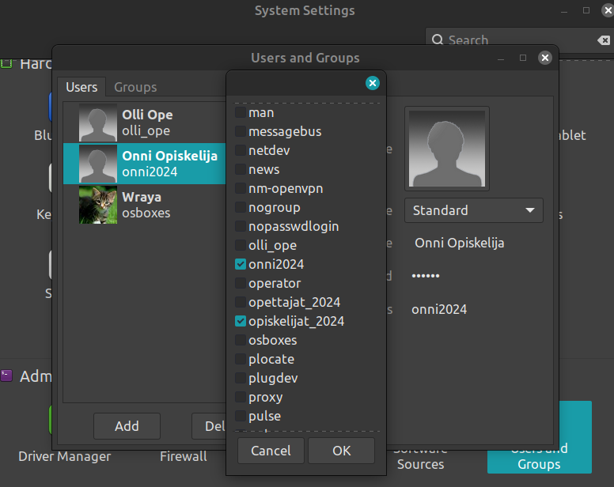
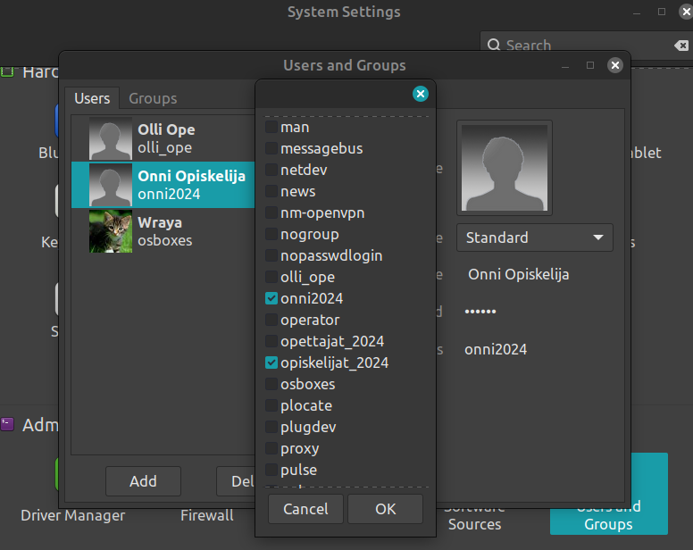
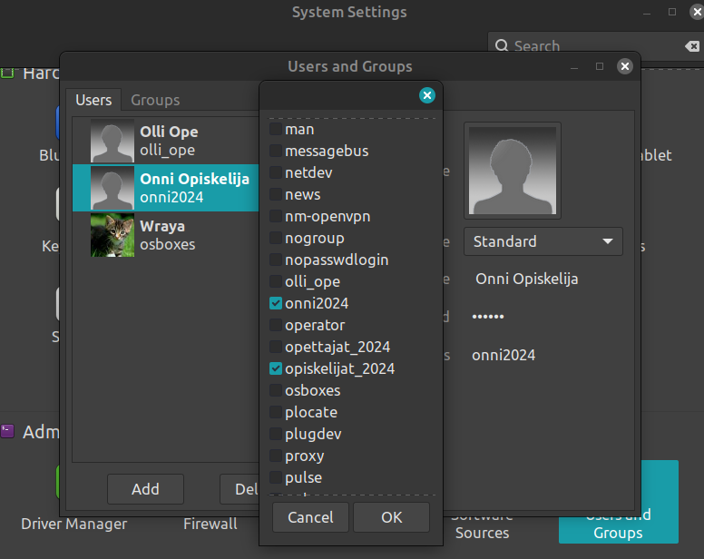

Ensin luotu kaksi käyttäjää graafisen työkalun kautta. Käyttäjien lisääminen graafisella työkalulla oli hyvin helppoa ja yksinkertaista. Salasanan pääsi asettamaan helposti. Materiaalien kuvissa oli enemmän vaihtoehtoja käyttäjän muokkaamiselle, esim. hakemiston määrittelyssä, mutta tässä ainakin näytti, että kun käyttäjän loi, niin se samalla loi käyttäjälle oman kotihakemiston, mutta en löytänyt, mistä sitä olisi päässyt muokkaamaan.
Komentorivillä testasin niin useradd kuin adduser -komentoja. Useradd oli helppo, koska askel askeleelta pystyi antamaan tietoja, mitä automaattisesti kysyttiin. Useradd-komennon kanssa piti erikseen muut tiedot, kuten salasanan.
Lisää toinen käyttäjä ryhmään "opiskelijat" ja toinen ryhmään "opettajat"

Koska oli jo luonut graafisella työkalulla ryhmät, niin komentorivillä vain lisäsin oonan opettajat_2024 -ryhmään ja oivan opiskelijat_2024 -ryhmään.
Luo hakemisto
Graafisella työkalulla sekä adduser-komennolla luoduilla käyttäjille oli luotu automaattisesti kotihakemistot, mutta Oona Opettajalle ei. Useradd ei luo automaattisesti muita tietoja. Joten luotu Oonalle oma kotihakemisto.
Lukitse molemmat tunnukset väliaikaisesti
Itse en kyllä keksi miten graafisella työkalulla pääsisin lukitsemaan käyttäjiä. Voin lisätä, poistaa, muuttaa salasanaa, asetta ryhmiin, mutta en millään keksi miten tätä kautta löytäisin user properties, mikä on materiaalissa...
Ja ilmeisesti Mintissä ei voi tehdä tätä graafisella työkalulla, vaan vain komentorivillä
Komentorivillä kokeilin kahta eri tapaa väliaikaiseen "sulkemiseen": käyttäjän lukitsemista ja salasanan "vanhentumiseen"

 
